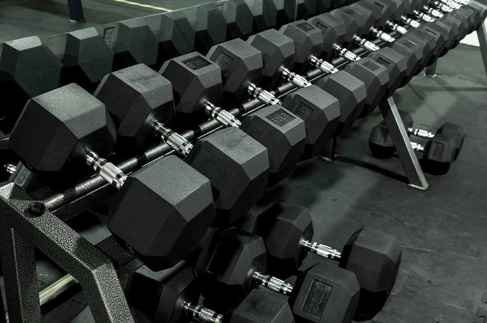

Below are some good beginner workouts, easy to get into your daily routine!
It's important to remember to start slowly, don't overdo it, and work your way up gradually.
Knowing your limits is important, and could save you from extreme injuries.
Strength Training:
For safe and effective strength training, you should prioritize proper form over heavy weight, warm up for 5-10 minutes, and focus on controlled movements. Train 2-3 times per week, and allow at least 48 hours of rest between sessions for maximum muscle recovery. Target all major muscle groups and increase weight gradually when exercises feel relatively easy. Some exercises include, squats, lunges, pushups, pullups, planks, chrunches, and leg raises.
Cardio:
For effective cardio, you should aim for at least 150 minutes of moderate intensity or 75 minutes of vigorous intensity activity per week. You build consistency by starting gradually, mixing in interval training, and combining it with strength training to improve heart health and boost endurance. Good cardio exercises include, walking, jogging, running, biking, swimming, jumping rope, and hiking.
Stretching and Mobility:
For stretching and mobility, prioritize consistency over intensity by doing gentle, controlled movements 3-4 days a week, which focuses on major muscle groups. Always warm up with 5-10 minutes of light activity first, hold stretches for 30 seconds, and move to the point of tension, not pain. A few good mobility exercises are, dynamic stretches, static streches, and foam rolling

Workout 1: Cardio
Whatever exercise you decide to do, you should aim to do it 3-4 times per week to start. They should typically last 20-45 minutes, depending on intensity. Your warm up/ cool down should be, spending 5 minutes on light cardio and stretching to prevent injury. While you are completing moderate exercises, you should be able to talk but not sing.
Workout 2: Lower Body
A highly effective lower body workout focuses on compound movements squats, hinges, and lunges, which target the quads, hamstrings, and glutes. A solid routine includes 4-6 exercises, beginning with heavy compound lifts, followed by single leg exercises, and finishing with isolation movements, performed 2-3 times per week.
Workout 3: Upper Body
Effective upper body workouts focus on combining compound pushing and pulling movements such as bench presses, rows, overhead presses, and pull-ups to target the chest, back, shoulders, and arms. A balanced routine typically includes 3-4 sets of 8-12 repetitions for each exercise, aiming to hit all major muscle groups for strength.